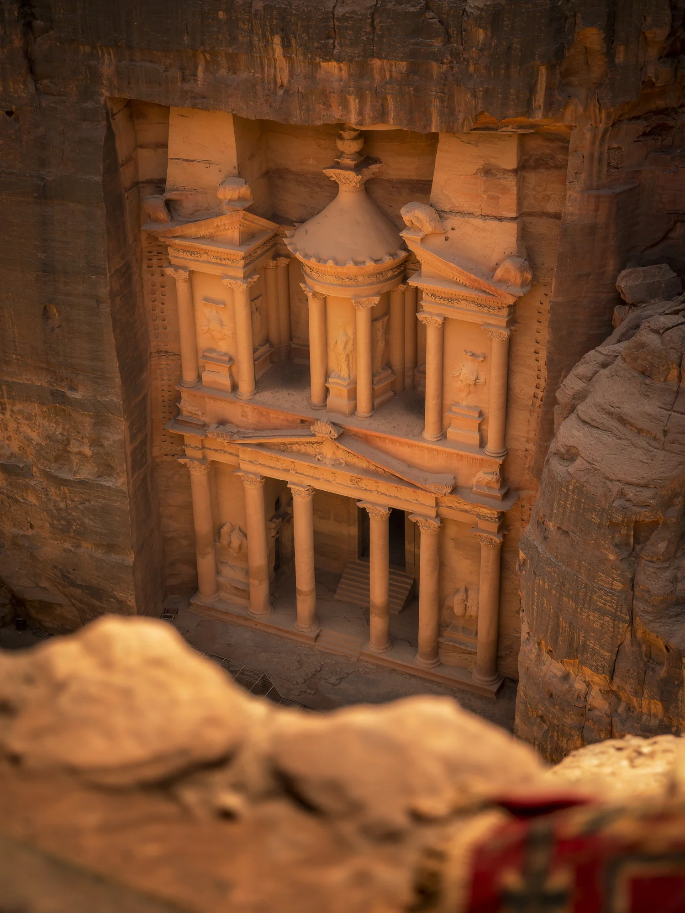
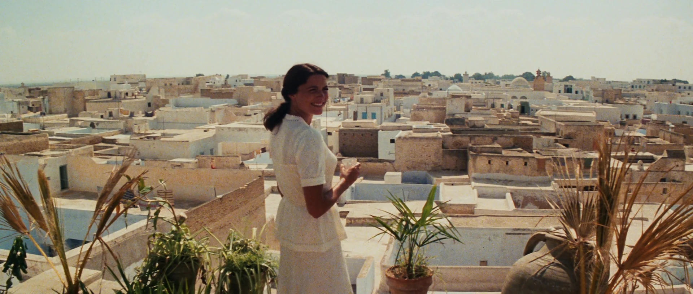
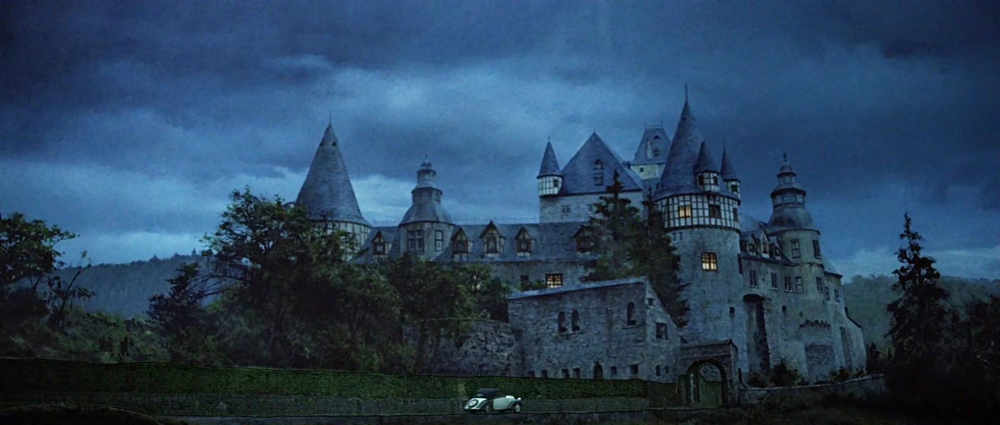

Location 01
The Canyon of the Crescent Moon: Petra, Jordan
One of the most breathtaking reveals in cinema history. At the climax of *The Last Crusade*, Indy rides through the Siq to discover the temple housing the Holy Grail. In reality, this is Al-Khazneh (The Treasury) in the ancient Nabataean city of Petra.
Find on Map
Location 02
The Peruvian Jungle: Kauai, Hawaii
The thrilling opening sequence of *Raiders of the Lost Ark* introduces us to Indiana Jones in a treacherous, booby-trapped jungle in South America. These lush landscapes were actually filmed along the Huleia River in Kauai.
Find on Map
Location 03
Streets of Cairo: Kairouan, Tunisia
When Indy and Marion are chased through the bustling streets and markets of 1930s Cairo in *Raiders of the Lost Ark*, they were actually filming in Kairouan, Tunisia. It's the site of the famous sword vs. gun duel.
Find on Map
Location 04
The Venetian Library: Church of San Barnaba, Italy
In *The Last Crusade*, Indy travels to Venice looking for Sir Richard's tomb. The exterior of the converted library where "X marks the spot" is the real-world Chiesa di San Barnaba, situated on a picturesque Venetian canal.
Find on Map
Location 05
Castle Brunwald: Schloss Bürresheim, Germany
To rescue his father, Indy infiltrates the heavily guarded Castle Brunwald, supposedly located on the Austrian-German border. The impressive stone exterior belongs to Schloss Bürresheim, a medieval castle in western Germany.
Find on Map